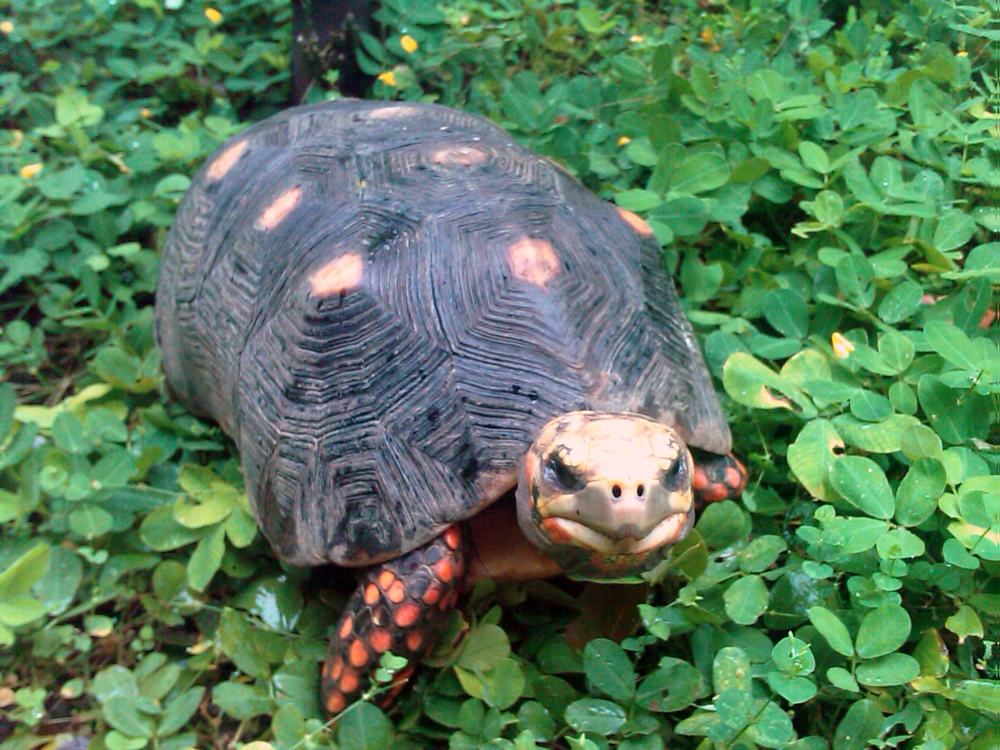
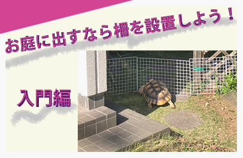
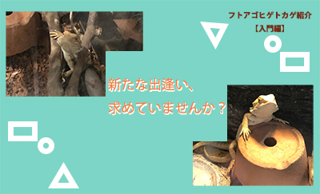
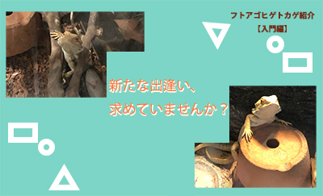
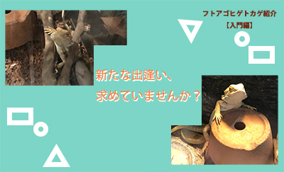

Topへ
- リクガメに興味はあるけど、どうやって飼えば良いの？
- そうだなぁ…疑問ちゃんは
リクガメさんと普通のカメさんの違いは知っているかな？ - ん〜、しらないかも。… 必要なものってなんだろう？？
- じゃあ、今日はリクガメについて授業をしようか！
- やった〜！
リクガメの特徴・基礎知識
リクガメ（英語表記：Tortoise）はアフリカ大陸をはじめ、
北アメリカ大陸、南アメリカ大陸、ユーラシア大陸、アジア、北米、中南米などに分布する生き物。
「100年生きるのは普通」と言われるほど寿命が長いんです。
たとえばセーシェル諸島を中心に分布するアルダブラゾウガメの寿命は80〜120年ほど。中には150年以上生きたアルダブラゾウガメもいるのだとか……。
ちなみに良く取り扱われている、ケヅメリクガメの平均寿命は約30年、
ヘルマンリクガメの寿命は約30〜50年と言われます。
「亀は万年」と言われますが、やはりリクガメは長生きするペットだと言えるでしょう。


北アメリカ大陸、南アメリカ大陸、ユーラシア大陸、アジア、北米、中南米などに分布する生き物。
「100年生きるのは普通」と言われるほど寿命が長いんです。
たとえばセーシェル諸島を中心に分布するアルダブラゾウガメの寿命は80〜120年ほど。中には150年以上生きたアルダブラゾウガメもいるのだとか……。
ちなみに良く取り扱われている、ケヅメリクガメの平均寿命は約30年、
ヘルマンリクガメの寿命は約30〜50年と言われます。
「亀は万年」と言われますが、やはりリクガメは長生きするペットだと言えるでしょう。
🌟リクガメの主な種類
- リクガメは30種類以上も存在するんだけど…
今日は代表的な8種類のリクガメを見ていこうね。
＊ケズメリクガメ
ケヅメリクガメは甲長（甲羅の大きさ）が
最大80cm以上になります。
モロッコタイプは色白でコブが出にくく、
ガーナタイプはコブが出やすく色黒。
寿命は平均30年ほど。
草食性で、野生のケヅメリクガメは
多肉植物や果物を食べます。
最大80cm以上になります。
モロッコタイプは色白でコブが出にくく、
ガーナタイプはコブが出やすく色黒。
寿命は平均30年ほど。
草食性で、野生のケヅメリクガメは
多肉植物や果物を食べます。
＊ホシガメ（インドホシガメ）
ホシガメ(インドホシガメ)は
甲長最大35〜40cmほどに成長します。
リクガメの中では比較的小型で
背甲の甲板に放射状の模様をもった美しいカメ。
寿命は25～50年ほど。
基本は草食性で、
主に草、木の葉、多肉植物、花などを食べます。
甲長最大35〜40cmほどに成長します。
リクガメの中では比較的小型で
背甲の甲板に放射状の模様をもった美しいカメ。
寿命は25～50年ほど。
基本は草食性で、
主に草、木の葉、多肉植物、花などを食べます。
＊ヘルマンリクガメ
ヘルマンリクガメの甲長は
最大15〜35cmほど。
もっとも小さい種類はダルマティアヘルマンリクガメ。
寿命は30〜50年ほど。
雑食性（主に草食性）で、
野生のヘルマンリクガメは
草の他に果物や昆虫、陸に住む貝類も食べます。
最大15〜35cmほど。
もっとも小さい種類はダルマティアヘルマンリクガメ。
寿命は30〜50年ほど。
雑食性（主に草食性）で、
野生のヘルマンリクガメは
草の他に果物や昆虫、陸に住む貝類も食べます。

＊アカアシガメ
アカアシガメは、
甲長最大50cmほどに成長します。
寿命は30〜50年ほど。
名前の由来は、
前足の前方の鱗が赤くなるからで、
頭部も赤くなります。
雑食性で、野生下では木の葉や花、果物、
サボテンのほか、
キノコや昆虫、動物の屍肉を食べることも。
甲長最大50cmほどに成長します。
寿命は30〜50年ほど。
名前の由来は、
前足の前方の鱗が赤くなるからで、
頭部も赤くなります。
雑食性で、野生下では木の葉や花、果物、
サボテンのほか、
キノコや昆虫、動物の屍肉を食べることも。
＊ヒョウモンリクガメ
（ヒョウモンガメ）
（ヒョウモンガメ）
ヒョウモンリクガメの
最大甲長は70cmほど。
アフリカでは、
ケヅメリクガメと同様にポピュラーです。
野生下での寿命は、
80〜100年で、飼育下では30〜70年ほど。
草食性で、
野生下では草や木の葉、果物、
多肉植物、キノコなどを食べます。
カルシウム補給に肉食生物の糞を食べる事も。
アフリカでは、
ケヅメリクガメと同様にポピュラーです。
野生下での寿命は、
80〜100年で、飼育下では30〜70年ほど。
草食性で、
野生下では草や木の葉、果物、
多肉植物、キノコなどを食べます。
カルシウム補給に肉食生物の糞を食べる事も。
＊ギリシャリクガメ
ギリシャリクガメは、
オスメス共に甲長25〜30cmほど、
最大甲長は38cmほどにまで成長します。
寿命は約30〜50年。
名前の由来は、甲羅の模様が
ギリシャ織のようになっているから。
草食性で、
草の他木の葉や花、果物を食べます。
オスメス共に甲長25〜30cmほど、
最大甲長は38cmほどにまで成長します。
寿命は約30〜50年。
名前の由来は、甲羅の模様が
ギリシャ織のようになっているから。
草食性で、
草の他木の葉や花、果物を食べます。
＊ロシアリクガメ
（ヨツユビリクガメ、
ホルスフィールドリクガメ）
（ヨツユビリクガメ、
ホルスフィールドリクガメ）
ロシアリクガメはヨツユビリクガメとも呼ばれます。
4本爪を持つことから名付けられました。
甲長は最大28cmほどで、
寿命は30〜50年ほど。
草食性で、葉や花、果物を食べます。
4本爪を持つことから名付けられました。
甲長は最大28cmほどで、
寿命は30〜50年ほど。
草食性で、葉や花、果物を食べます。
＊パンケーキリクガメ
（パンケーキガメ）
（パンケーキガメ）
パンケーキリクガメの体長は
15〜20cmほどで、寿命は20〜30年ほど。
パンケーキのように平たく、
触ると柔らかい甲羅を持ちます。
草食性で、野生下では草や多肉植物を食べます。
15〜20cmほどで、寿命は20〜30年ほど。
パンケーキのように平たく、
触ると柔らかい甲羅を持ちます。
草食性で、野生下では草や多肉植物を食べます。
！インドホシガメ、パンケーキリクガメ（パンケーキガメ）は
ワシントン条約（サイテス）の「附属書Ⅰ」に指定されており、国際的な商業取引が禁止されています！
ワシントン条約（サイテス）の「附属書Ⅰ」に指定されており、国際的な商業取引が禁止されています！
リクガメを飼育するにあたって
- リクガメを飼育するにあたって、
必要なアイテムは全部で９つ。１つずつ確認していこう！


①飼育ケース
- 飼育ケースの大きさは下記を参考にしてみよう！
リクガメの飼育ケースの選び方
・10cmまでの個体：幅60cm×奥30cm程度
・10cm以上の個体：幅90cm×奥45cm程度
・10cmまでの個体：幅60cm×奥30cm程度
・10cm以上の個体：幅90cm×奥45cm程度
ガラス製で、フロントドアがあるものだとお世話や掃除がしやすいです。
大型になるのが予測されるリクガメなら、あらかじめ成長した後の大きさも考えてサイズを選びましょう。
また、リクガメは活発に動き回ります。そのため小さなケージではストレスが過度にかかることも。
さらに、カメは変温動物であることも十分理解しましょう。
ケージ内に温度勾配をつけて、暖かい場所と涼しい場所を作ってあげる必要があります。そのためにも、広めのケージで飼育することは大切です。
大型になるのが予測されるリクガメなら、あらかじめ成長した後の大きさも考えてサイズを選びましょう。
また、リクガメは活発に動き回ります。そのため小さなケージではストレスが過度にかかることも。
さらに、カメは変温動物であることも十分理解しましょう。
ケージ内に温度勾配をつけて、暖かい場所と涼しい場所を作ってあげる必要があります。そのためにも、広めのケージで飼育することは大切です。
②紫外線照明
野生下のリクガメは、紫外線を浴びてビタミンD3を合成します。
ビタミンD3にはカルシウム吸収を促すはたらきがあり、これは骨格の形成に重要な栄養素。
しかし、室内での飼育下ではリクガメは太陽光を浴びることができません。
そのために必要なのが紫外線照明。これは健康維持に不可欠なアイテムですので、室内飼育下では必ず設置してあげましょう。
紫外線を照射できる爬虫類専用のものを使い、1日あたり12時間程度は紫外線を浴びられる環境を作ります。
あわせて気候の良い季節には、時々屋外で日光浴できる機会も与えてあげましょう。お散歩に連れて行くのも良いですね！
ビタミンD3にはカルシウム吸収を促すはたらきがあり、これは骨格の形成に重要な栄養素。
しかし、室内での飼育下ではリクガメは太陽光を浴びることができません。
そのために必要なのが紫外線照明。これは健康維持に不可欠なアイテムですので、室内飼育下では必ず設置してあげましょう。
紫外線を照射できる爬虫類専用のものを使い、1日あたり12時間程度は紫外線を浴びられる環境を作ります。
あわせて気候の良い季節には、時々屋外で日光浴できる機会も与えてあげましょう。お散歩に連れて行くのも良いですね！
③保温器具
- 保温器具は下記の3種類があれば安心かな。
火傷には要注意だよ！！設置位置には十分注意してね。 - なるほど…！気をつけなきゃいけない事が沢山あるね。
リクガメの保温アイテム
・全体保温球
・バスキングランプ（局所保温）
・パネルヒーター
・全体保温球
・バスキングランプ（局所保温）
・パネルヒーター

リクガメを飼育する場合は、飼育ケージ内を26〜36°Cに保つ必要があります。
とくに冬場は温度が下がりすぎないよう注意しましょう。
また、リクガメは変温動物ですので、体温が調整できる環境を作ってあげる必要があります。
バスキングライトを設置し、局所保温できる場所（ホットスポット・バスキングスポット）を作りましょう。
とくに冬場は温度が下がりすぎないよう注意しましょう。
また、リクガメは変温動物ですので、体温が調整できる環境を作ってあげる必要があります。
バスキングライトを設置し、局所保温できる場所（ホットスポット・バスキングスポット）を作りましょう。
④温湿度計
- 飼育ケースを26〜36°Cに保つのって大変そう…。
- 大変かも知れないけれど、ケージ内に温湿度計を設置して
定期的にチェックしよう。命に関わるからね…！
⑤床材
床材は清潔な空間を保つため、排泄物が見えやすいものを選びましょう。
また、リクガメの種類によって乾燥を好むか、湿潤を好むかが異なるため注意してください。
また、リクガメの種類によって乾燥を好むか、湿潤を好むかが異なるため注意してください。
以下、参考です。

乾燥を好むリクガメの床材には、乾燥したヤシガラ土やバークチップなどがおすすめです。
一方湿潤を好むリクガメの場合、湿らせたヤシガラ土や吸湿性のあるソイルがいいでしょう。これで飼育ケース内の湿度を上げることができます。
一方湿潤を好むリクガメの場合、湿らせたヤシガラ土や吸湿性のあるソイルがいいでしょう。これで飼育ケース内の湿度を上げることができます。
⑥シェルター
リクガメはシェルターに入って良く眠ります。
そのため、リクガメの甲羅がすっぽり入るような、落ち着いて身を隠せる大きさのシェルターを選びましょう。
紫外線を回避したり、ストレスを軽減させるはたらきもあります。
そのため、リクガメの甲羅がすっぽり入るような、落ち着いて身を隠せる大きさのシェルターを選びましょう。
紫外線を回避したり、ストレスを軽減させるはたらきもあります。
⑦エサ入れ・水入れ
エサ入れ・水入れは浅めのものが好ましいです。
深いものですと段差に引っかかり、リクガメがひっくり返ってしまう恐れがあります。
また、リクガメが容器をひっくり返してしまわないよう、重さのあるものを選びましょう。

深いものですと段差に引っかかり、リクガメがひっくり返ってしまう恐れがあります。
また、リクガメが容器をひっくり返してしまわないよう、重さのあるものを選びましょう。
- ふふっ、ご飯食べるの下手くそだね〜。
可愛くてずっと見ていられるね。 - もし大変そうだったらサポートしてあげてね。
⑧エサ
リクガメは主に草食性です。
小松菜・チンゲン菜などを与えて飼育することも可能ですが、栄養の偏りを防ぐために専用フードやサプリメントも併用しましょう。
餌の与え方については、後ほどまた解説します。
小松菜・チンゲン菜などを与えて飼育することも可能ですが、栄養の偏りを防ぐために専用フードやサプリメントも併用しましょう。
餌の与え方については、後ほどまた解説します。
⑨サプリメント
リクガメの飼育で不足しがちな栄養素はカルシウムです。サプリメントでしっかりと補いましょう。
偏食がある場合はビタミン剤もあるとバランスが良いです。
餌の葉物に粉末状のカルシウムを混ぜたり、お水に溶かして飲ませると楽ですよ♪
偏食がある場合はビタミン剤もあるとバランスが良いです。
餌の葉物に粉末状のカルシウムを混ぜたり、お水に溶かして飲ませると楽ですよ♪
🌟ご飯の与え方
- そういえば、リクガメって何を食べるの？
- 主食には小松菜・チンゲン菜・サラダ菜・大根の葉等が
おすすめだよ。 栄養が偏らないように、
補助として人工フードも併せてあげてみてね。
ベビーには1日に数回、アダルトは1日に1回を目安に個体に合わせて調整しましょう。
慣れてくれば、スイカやイチゴなどのフルーツも好んで食べるようになります。
慣れてくれば、スイカやイチゴなどのフルーツも好んで食べるようになります。
🌟甲羅をツヤツヤに保つには？
- リクガメへのサプリメントとして、
カルシウム剤がお手軽でおすすめだよ。
与えることで硬くて丈夫、
また、ツヤツヤで綺麗な甲羅にもなるんだ！
基本的に、毎日一つまみ程度をご飯にかけて与えるだけでOK。
飲み水に加えて補給できるものもあります。
飲み水に加えて補給できるものもあります。

気をつけるべきポイント
🌟ケージの温度管理
- 下記はリクガメ飼育での日中・夜間の適温の目安だよ。
リクガメ飼育の温度目安
・日中：28〜32°C程度
・夜間：26〜28°C程度
・バスキングスポット：35〜38°C前後（生体の火傷に注意）
！バスキングスポット:日向ぼっこをする場所のこと・日中：28〜32°C程度
・夜間：26〜28°C程度
・バスキングスポット：35〜38°C前後（生体の火傷に注意）
リクガメ飼育に適切な湿度は、飼育するリクガメの種類によって異なります。
しかし、もともと乾燥地帯に生息するリクガメ（ギリシャリクガメ、ケヅメリクガメ、ヒョウモンガメなど）でも、
湿度を40％程度以上に保つ必要があります。
日本国内の湿度は、冬場から春先にかけては10度台にまで落ち込みます。
温湿度計で確認し、種類に応じた湿度を保てるようにしましょう。
そのため、ケージ内に置く温湿度計は定期的に確認するようにしましょう！
🌟温浴について
- 実はリクガメと暮らす上で、温浴はとても大事！
重要な役割を持っているし、気持ちよさそうに温浴する
姿は可愛いので是非見守ってあげながら温浴させてね。 - へ〜！そうなんだ！
ふふっ、可愛くてずっと見ていられるね〜♡
リクガメは週に1回ほど、35℃位のお湯に入れて10分くらい温浴させましょう。
これは水分補給をさせる目的でもあります。
温度が下がったり排泄したら水を交換しましょう。
また、温浴によって排泄するものは主に白い便です。
これはリクガメの体内に溜まっていた良くない物質ですので、できるだけ出させてあげてください。
理由は、結石などの病気に罹るリスクを減らせるためです。
リクガメちゃんの健康のためにも、忘れずに入れてあげてくださいね♪
これは水分補給をさせる目的でもあります。
温度が下がったり排泄したら水を交換しましょう。
また、温浴によって排泄するものは主に白い便です。
これはリクガメの体内に溜まっていた良くない物質ですので、できるだけ出させてあげてください。
理由は、結石などの病気に罹るリスクを減らせるためです。
リクガメちゃんの健康のためにも、忘れずに入れてあげてくださいね♪

🌟ケージのお手入れについて
- 先生〜！！
何か匂う気がするんだけど…。どうして？ - ああ…リクガメは排泄物が多いからね。
匂いや汚れが定着しない様、定期的にお手入れをしよう！
リクガメは排泄物が多く、飼育する上で匂いが気になることがあるかも知れません。
また、ケージについた石灰汚れは中々落ちないことも。
そういう場合はお手入れ用品を使ってみてください。
爬虫類専用のものもありますので、リクガメにとって害になることもなく安心です。
また、ケージについた石灰汚れは中々落ちないことも。
そういう場合はお手入れ用品を使ってみてください。
爬虫類専用のものもありますので、リクガメにとって害になることもなく安心です。
最後に
- 今日はリクガメについてお話ししたね。
疑問ちゃん、リクガメについて少しは勉強になったかな？ - うん！！
いろいろなことが知れて楽しかった〜！
準備が整ったらお迎えしたいな〜♪
・・・いかがでしたか？
今回はリクガメについてご説明させていただきました。
リクガメは学習能力があるので、ご飯をくれてお世話をしてくれる飼い主さんを認識します。
そのため手からご飯を食べてくれたり、後を追って寄ってきたりと可愛い仕草を見せてくれます。
日が出て天気が良い日は、屋外でプチ散歩をしても楽しいですよ！
雑草が生えている原っぱだとお腹いっぱい草を食べられるのでおすすめです。
あなたもこの記事を参考に、ぜひ楽しいリクガメライフを送ってくださいね♪
今回はリクガメについてご説明させていただきました。
リクガメは学習能力があるので、ご飯をくれてお世話をしてくれる飼い主さんを認識します。
そのため手からご飯を食べてくれたり、後を追って寄ってきたりと可愛い仕草を見せてくれます。
日が出て天気が良い日は、屋外でプチ散歩をしても楽しいですよ！
雑草が生えている原っぱだとお腹いっぱい草を食べられるのでおすすめです。
あなたもこの記事を参考に、ぜひ楽しいリクガメライフを送ってくださいね♪

🔽関連記事

 


◉ ◉ ◉